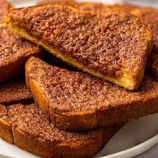

Cinnamon Toast

Description
This is quite possibly the easiest snack to make with only 4 ingredients!
Ingredient List
- 1-2 Slices of Bread
- 1/2 tsp of Cinnamon
- 1/2 tsp of Sugar Onion Sliced
- 1 tsp of Unsalted Butter
My Step-by-Step Process
- Place your bread in the toaster or oven until slightly crunchy
- Spread butter evenly on toast
- Sprinkle sugar and cinnamon on buttered toast and voila!Enjoy this delicious treat!
Return to Top
Return to Main